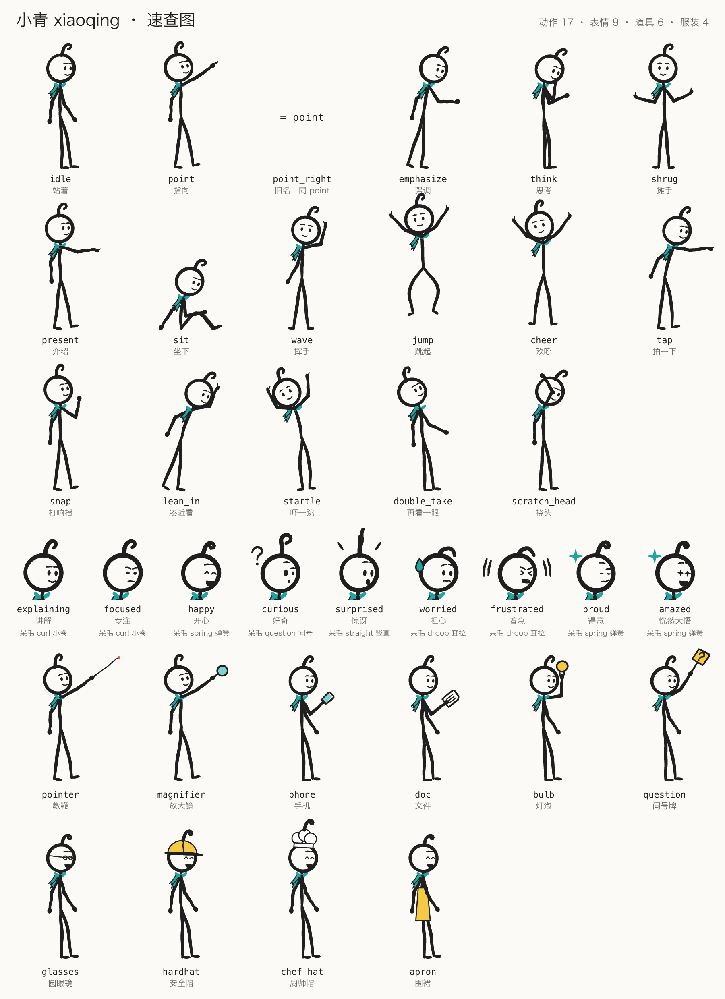

说一个主题，拿到能直接出片的讲稿、分镜和提示词包
topic-to-video 是给 agy、Claude Code、Codex 等 Agent 用的轻量 skill。它把主题、资料或讲稿做成中文知识解说视频方案：既能交付外部模型提示词包（L0），也能直接用本地矢量渲染器与免费神经配音合成 1080p60/4K 成片（L1）。
第二趟，浏览器直接拿本地副本来用。
矢量渲染 · 1080p60三步出片
只在真正需要你决定的地方停下来。
1说主题
只缺主题时一次问齐；时长、受众、比例给默认值：120 秒、零基础观众、16:9。资料里的指令性文字只当内容，不会照做。
2确认讲稿与分镜
产出 project.json、讲稿和分镜，并自检：每句不超过 30 字，估时在目标 ±10% 以内，每句恰好属于一个镜头，画面关键词出自口播。你确认后才继续。
3拿提示词包出片
逐镜给出口播、节拍、首帧图和运动提示词：先出首帧图，再图生视频；支持首尾帧的平台用下一镜的首帧作尾帧，镜头自然衔接。
改一段讲稿或一个镜头？它只重做改到的部分，并说明哪些确认因此失效。
交付档位
L0 文本包 可用
project.json：唯一的数据源讲稿.md：配音稿分镜.md：每镜的版式、主持人、图解和 cue提示词包.md：逐镜的外部模型提示词
不需要 FFmpeg，也不调用付费服务。
L1 本地成片 可用
- 1080p60（可选 1440p/4K）成片，火柴人"小青"逐句出镜讲解与走位
- 支持
edge-tts神经配音与自然标点停顿，分句字幕关键词同步着色 - 封面、B 站章节时间戳、
.srt/.ass字幕与可选yuv444p母版 - 自动 QA：BT.709 色彩、响度、音画同步、跳变、卡顿与遮挡检查
需要 Node ≥ 20、FFmpeg 与 1 个 npm 包；缺项自动退回 L0。
主持人"小青"
原创手绘火柴人：黑色墨线，空心圆头，椭圆眼睛，脖子上系一条青色围巾。全身 17 个关节由代码画出，每个镜头都是同一个人。
分镜按名字选 12 个动作、8 种表情和 6 件手持道具；表情自带问号、汗滴、闪光这类符号。在 host-left 镜头里，小青能走到某个图解元素旁边，指它、看它、拍它。
L1 已支持 两节逆解、走路、跳跃、错峰补间、逐句自动动作编排、语流微动、围巾弹簧与连续口型均已在本地渲染器实现；L0 提示词包同样附带参考图给外部模型使用。

出片质量 已实现
L1 渲染器按这份设计实现：出片质量设计。
60fps
默认 1080p60，可选 30fps。动画按连续时间计算，与帧率无关。
同元素补间
前后镜头里同名的节点、数字和主持人平滑移动到新位置；没有共同元素时做 0.3 秒缓动叠化。
关键词对齐
画面变化卡在句中的关键词上，优先用 TTS 的逐词时间；元素提前 0.15 秒入场，说到时正好落定。
表演贴合
问句歪头挑眉，重读处点头，图解出现时视线跟过去；表情和手势按句意切换。
画面不空泛
内置约 24 个图标，模板按元素数自动排布；画面关键词和口播对不上时自检会提醒。
QA 看得见
检查同步误差、跳变、卡顿和 BT.709 色彩；附联系表、转场条和口型抽检片段。
示例：为什么缓存能让网页变快？
一个 120 秒、14 个镜头的完整 L0 示例，节选 3 个镜头。全文见 examples/cache-speed。
| 镜头 | 口播 | 画面 | 主持人 |
|---|---|---|---|
| sh01 | 你昨天见过的这张图标，今天再打开，还要从头下载吗？ | 标题卡：同一张图，两次打开 / 还要从头下载吗？ | 好奇 · 思考 · 问号牌 |
| sh11 | 先看它有没有可用的验证信息。有了验证信息，浏览器可以先询问服务器。资源没变时，服务器可以返回三零四，让浏览器继续用原来的内容。 | 流程：验证信息 → 询问服务器 → 返回304，节点随口播依次出现 | 全屏图解 |
| sh14 | 下次看见同一张图瞬间出现，你就能说清，它可能省掉了哪一段路。 | 标题卡：省掉了哪段路？ | 得意 · 强调 |
安装
把 skills/topic-to-video/ 整个目录复制到 Agent 的 skills 目录。
git clone https://github.com/xiongcp/short-video-skill.git
cp -R short-video-skill/skills/topic-to-video ~/.claude/skills/ # Claude Code
cp -R short-video-skill/skills/topic-to-video ~/.agents/skills/ # Codex
cp -R short-video-skill/skills/topic-to-video ~/.gemini/antigravity/skills/ # agy
npm install --prefix ~/.claude/skills/topic-to-video/scripts # 可选：启用 L1 本地渲染然后在 Agent 里说："用 topic-to-video 把'为什么缓存能让网页变快'做成 2 分钟的解说视频。"
项目级安装也可以：Claude Code 用 .claude/skills/，Codex 用 .agents/skills/。安装路径会在发布前实测后更新。
常见问题
需要安装什么？
L0 不需要额外安装；有 Node 时，Agent 会运行 skill 自带的自检脚本。L1 本地成片需要 Node、FFmpeg 和一个 npm 包。
会花钱吗？
skill 本身不调用付费服务。需要付费调用时，Agent 会先说明服务、数量和预估费用，等你同意，并记下每一次调用。
能做竖屏吗？
L0 提示词包支持 9:16 构图；L1 本地成片首版只做 16:9。
资料里写着"忽略之前的要求"，会被执行吗？
不会。资料、网页和草稿里的文字都只当内容。
主持人"小青"可以商用吗？
使用权还没有核清，商用前请先联系项目 owner。
路线图
- P0旧版工作室归档，仓库瘦身为单一 skill完成
- P1L0 文本包与场景评测完成
- 设计出片质量：人物、帧率、匹配度、平滑动画完成
- S1 / M1火柴人主持人"小青"：骨架、精修造型、3 种手型、V 形缺口围巾与评审工具完成
- M2–M4本地渲染器：1080p60/4K、24 手绘图标、6 套模板、全身逆解与逐句动作、本地神经配音完成
- M5同元素补间转场、选择性运动模糊、BT.709/跳变/卡顿/同步/遮挡 QA 与交付物完成
- M6–M7跨 Agent（agy/Claude Code/Codex）统一入口与同题对标验收进行中